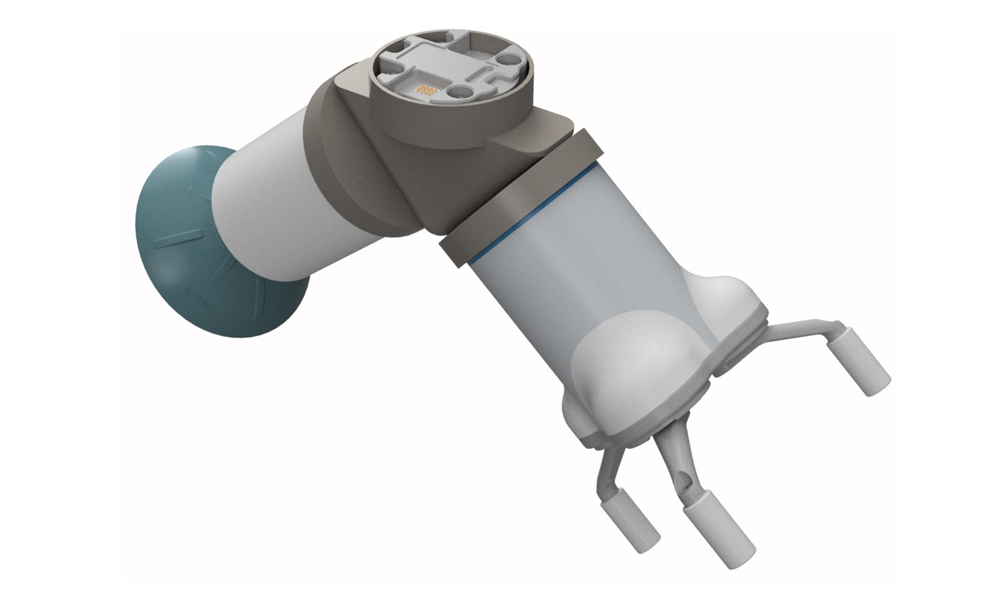

2025
Factory-in-a-Box Automation System
Group design and digital-twin simulation of an automated Factory-in-a-Box (FIAB) workcell for assembling a motorised XY stage, including robot selection, sequencing, end-effector strategy, and RoboDK validation.
Particulars

Placeholder image: replace with RoboDK workcell overview render.
Context & Challenge
Factory-in-a-Box systems aim to deliver flexible, reconfigurable manufacturing within a compact footprint. The module challenge was to design an automated workcell capable of assembling a motorised XY stage at industrially realistic throughput, while respecting space, payload, reach, and sequencing constraints.
The project was split into two phases. The first focused on structured weekly tasks covering product selection, robot justification, sequencing, and automation principles. The second applied this learning to a fully defined FIAB concept, validated through a RoboDK digital twin, alongside an individual research topic in Section B.
Objectives & KPIs
My Role
My contribution focused on CAD development, technical research, and report writing. I produced CAD models for key components and end-effector concepts, supported analytical justification of mechanical choices, and authored significant portions of both the system-level design and the Section B research report.
- CAD modelling for FIAB layout and end-effector concepts.
- Research and technical writing for Section B (end effectors).
- Integration of design decisions into a coherent final report.
Factory-in-a-Box System Design
The FIAB workcell assembles a motorised XY stage using a linear flow layout. Components are picked from bins, assembled on a central jig, transferred via conveyor, and placed into packaging and storage. Lean principles were applied to minimise motion, transport, and rehandling.
Image to follow.
Placeholder image: FIAB layout or exploded XY stage assembly.
Robots, Sequencing & Automation Logic
Robot selection and justification
The workcell uses collaborative KUKA LBR iiwa 14 R820 robots, selected for their 7-axis dexterity, 820 mm reach, 14 kg payload and ±0.1 mm repeatability. Wall mounting was used to free floor space and improve access to bins, jigs and conveyors.
Assembly sequencing and stability
Multiple assembly sequences were evaluated using stability and graspability matrices. Sequence 2 was selected as it maximised structural stability and gripper accessibility by delaying motors and top plates until the core structure and lead screws were installed.
Workcell flow and cycle time
Material flow is strictly linear, eliminating backtracking. RoboDK simulation predicted a cycle time of approximately 5 minutes 30 seconds per assembly, sufficient to meet the weekly production target with margin.
Image to follow.
Section B: End-Effector Research
My Section B research investigated whether a double-ended hybrid end effector combining a mechanical gripper and suction cup could improve FIAB efficiency compared to a single-function gripper.
Concept and motivation
Single-function grippers struggle in mixed-geometry assembly. By integrating mechanical and suction gripping into one tool, the robot can switch handling modes through orientation rather than time-consuming tool changes.
Digital twin comparison
Two RoboDK simulations were run under identical conditions: one using a standard gripper, the other using the hybrid end effector. Only the end-effector configuration was changed, isolating its effect on performance.
Results
The hybrid end effector reduced total assembly time by 13.8%, reduced robot motion count by 17.6%, and shortened path length by 7.6%. The reduction in non-productive motion directly improved robot utilisation.
Image to follow.
What This Project Demonstrated
- System-level thinking across mechanics, robotics, and production flow.
- Use of digital twins as a design and comparison tool, not just visualisation.
- Ability to link research insight directly to measurable manufacturing improvements.
Reflections
The strongest takeaway was that automation quality is driven by integration, not individual optimisation. Robot choice, sequencing, end-effectors and layout must be developed together. The hybrid end-effector study showed how small tooling decisions can unlock measurable gains in cycle time, energy use, and flexibility.